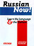
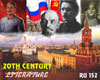
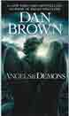
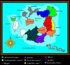

Courses

For some course materials you will need to configure your computer to read and write Russian.
Press here for Windows or here for Macintosh
or Russian typing and keyboards
Spring 2011
 |
RUSS0103 Beginning Russian
|
Russian Literature of the Nineteenth Century
|
Fall 2010
RUSS0101a Beginning Russian
|
|
 |
RU0152 Russian Literature of the Twentieth Century An innovative approach to independent student work using the latest in new technologies.
|
Spring 2010
RUSS0103 Beginning Russian |
|
Russian Literature of the Nineteenth Century
|
Winter 2010

Fall 2009
RUSS0101 Beginning Russian |
|
 |
The Keys to Angels and Demons
The Course----- The Novel Annotated
|
Spring 2009
RUSS0103 Beginning Russian |
|
Russian Literature of the Nineteenth Century
|
Fall 2008
RUSS0101 Beginning Russian |
|
RU0152 Russian Literature of the Twentieth Century An innovative approach to independent student work using the latest in new technologies.
|
Spring 2008
RUSS0103 Beginning Russian |
|
RU0152 Russian Literature of the Twentieth Century An innovative approach to independent student work using the latest in new technologies.
|
Winter 2008
Intensive Beginning Russian Language and Culture (Russian 102) Syllabus
Fall 2007
RUSS0101 Beginning Russian |
|
Fall 2006
|
 |
|
|
Master and Margarita |
Spring 2006
|
RUSS0103 Beginning Russian |
|
FALL 2005
|
RUSS0101 Beginning Russian |
|
FALL 2005
|
RUSS0101 Beginning Russian |
|
My previous courses on the web
Spring 2005
Russian Literature of the Twentieth Century
Fall 2004
|
|
FYSE 1087 A - The Da Vinci Code: Fact or Fiction? The Keys to Dan Brown's The Da Vinci Code |

Spring 2004
Fall 2003
Winter 2003
Intensive Beginning Russian Language and Culture (Russian 102)
Students in the course prepared an electronic mini-encyclopedia of Russian history and Culture
Fall 2002
Spring 2002
Fall 2001
FS028 In Search of the Heroes of Our Time
RU704 Contemporary Issues (with a section on ecology)
Independent study: A course on Russian Ecology made for the web that can be used within a course or for individual instruction. The course includes links to student designed mini-courses in Russian on Computer Piracy, Putin, Disarmament and Chechnya.
Spring 2000
RU 351 Dostoevsky -Spring 2000
With a new student guides to Memoirs from the House of the Dead, and Notes from the Underground
Fall 1999
RU232: The Origin and Nature of Human Language
Spring 1999
RU 412: Russian Culture and Civilization in the Twentieth Century.
For this course students developed a Virtual Encyclopedia of 20th Century Russia.
(Lately students have taken the lead in developing materials for the web.
Click here for a Mini-Russian Review Grammar prepared by a first year Russian Student, Nubia Pacheco.)
Fall 1998
Spring 1998:
Fall 1997:
Spring 1997:
|
|
Good morning, Vermont a Russian
course for |

Dostoevsky-Spring 1996.
Dostoevsky (Russian 351) Student papers on
themes of his major novels.
Dostoevsky-Fall 1996.
Dostoevsky (Russian 351).Student papers on the major novels: Crime and Punishment , The Idiot, The Devils , Brothers Karamazov.
 Middlebury College
Middlebury College
Professor Thomas R. Beyer, Jr.
tom.beyer@middlebury.edu
All contents copyright (C) 1998, Thomas R. Beyer, Jr. All rights reserved